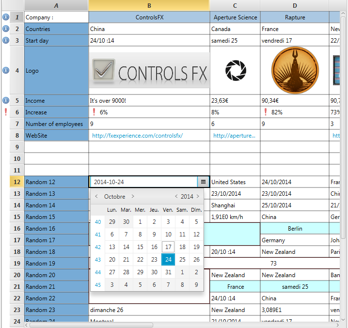

- java.lang.Object
-
- javafx.scene.Node
-
- javafx.scene.Parent
-
- javafx.scene.layout.Region
-
- javafx.scene.control.Control
-
- org.controlsfx.control.spreadsheet.SpreadsheetView
-
- All Implemented Interfaces:
- javafx.css.Styleable, javafx.event.EventTarget, javafx.scene.control.Skinnable
public class SpreadsheetView extends javafx.scene.control.ControlThe SpreadsheetView is a control similar to the JavaFXTableViewcontrol but with different functionalities and use cases. The aim is to have a powerful grid where data can be written and retrieved.Features
- Cells can span in row and in column.
- Rows can be frozen to the top of the
SpreadsheetViewso that they are always visible on screen. - Columns can be frozen to the left of the
SpreadsheetViewso that they are always visible on screen. - A row header can be switched on in order to display the row number.
- Rows can be resized just like columns with click & drag.
- Both row and column header can be visible or invisible.
- Selection of several cells can be made with a click and drag.
- A copy/paste context menu is accessible with a right-click. The usual shortcuts are also working.
Pickercan be placed above column header or to the side of the row header.- Rows and columns can be hidden (like Excel grouping).
- Zoom in and out in order for the SpreadsheetView to fit on a monitor.
- Rows can be sorted using a
Comparator.
Freezing Rows and Columns
You can freeze some rows and some columns by right-clicking on their header. A context menu will appear if it's possible to freeze them. When frozen, the label header will then be in italic and the background will turn to dark grey.
You have also the possibility to freeze them manually by adding and removing items fromgetFixedRows()andgetFixedColumns(). But you are strongly advised to check if it's possible to do so withSpreadsheetColumn.isColumnFixable()for the frozen columns and withisRowFixable(int)for the frozen rows.
A set of rows cannot be frozen if any cell inside these rows has a row span superior to the number of frozen rows. Likewise, a set of columns cannot be frozen if any cell inside these columns has a column span superior to the number of frozen columns.
If you want to freeze several rows or columns together, and they have a span inside, you can callareRowsFixable(java.util.List)orareSpreadsheetColumnsFixable(java.util.List)to verify if you can freeze them. Be sure to add them all in once otherwise the system will detect that a span is going out of bounds and will throw an exception. Calling those methods prior every move will ensure that no exception will be thrown.
You have also the possibility to deactivate these possibilities. For example, you force some row/column to be frozen and then the user cannot change the settings.
Headers
You can also access and toggle header's visibility by using the methods provided likesetShowRowHeader(boolean)orsetShowColumnHeader(boolean).
Users can double-click on a column header will resize the column to the best size in order to fully see each cell in it. Same rule apply for row header. Also note that double-clicking on the little space between two row or two columns (when resizable) will also work just like Excel.Pickers
You can show some little images next to the headers. They will appear on the left of the VerticalHeader and on top on the HorizontalHeader. They are called "picker" because they were used originally for picking a row or a column to insert in the SpreadsheetView.
But you can do anything you want with it. Simply put a row or a column index ingetRowPickers()andgetColumnPickers()along with an instance ofPicker. You can override thePicker.onClick()method in order to react when the user click on the picker.
The pickers will appear on the top of the column's header and on the left of the row's header.
For example, here is a picker displayed for a row that allow to group rows like Excel:

Once we clicked on the picker (minus sign), the rows are hidden.

Here is the code related to the images :Picker picker = new Picker() { @Override public void onClick() { //If my details are hidden if (getHiddenRows().get(3)) { showRow(3); showRow(4); showRow(5); showRow(6); } else { hideRow(3); hideRow(4); hideRow(5); hideRow(6); } } }; getRowPickers().put(2, picker);Copy pasting
You can copy any cell you want and paste it elsewhere. Be aware that only the value inside will be pasted, not the style nor the type. Thus the value you're trying to paste must be compatible with theSpreadsheetCellTypeof the receiving cell. Pasting a Double into a String will work but the reverse operation will not.
SeeSpreadsheetCellTypeValue Verification documentation for more information.
A unique cell or a selection can be copied and pasted.
Hiding rows and columns
Rows and columns can be hidden if you need to. Simply call
showRow(int)orhideRow(int)in order to toggle the visibility of a row. Same for the column.
Note that the span of the cell (in row or column) will automatically adapt based on the visible rows or columns. You have nothing to do.
Because toggling visibility have an impact on the Grid, if you have a lot of rows/columns to show or hide, you may consider setting them all directly by usingsetHiddenRows(java.util.BitSet). TheBitSetrepresent all your rows/columns and the bit associated to it represent its visibility.Zoom
The SpreadsheetView offers the possibility to zoom in or out. This is useful when you have a second monitor and you want your whole grid to fit in. Or when you want to draw the attention on a particular portion of the grid.
You can modify the zoom factor by playing withsetZoomFactor(java.lang.Double). We recommend using value between 2 and 0.1.
Also note that the SpreadsheetView is configured to react when CTRL + and CTRL - are triggered by, respectively, zooming in and zooming out by 10%. Also CTRL 0 will bring the zoom back to default (1).Code Samples
Just like theTableView, you instantiate the underlying model, aGrid. You will create some rows filled withSpreadsheetCell.
int rowCount = 15; int columnCount = 10; GridBase grid = new GridBase(rowCount, columnCount); ObservableList<ObservableList<SpreadsheetCell>> rows = FXCollections.observableArrayList(); for (int row = 0; row < grid.getRowCount(); ++row) { final ObservableList<SpreadsheetCell> list = FXCollections.observableArrayList(); for (int column = 0; column < grid.getColumnCount(); ++column) { list.add(SpreadsheetCellType.STRING.createCell(row, column, 1, 1,"value")); } rows.add(list); } grid.setRows(rows); SpreadsheetView spv = new SpreadsheetView(grid);At that moment you can span some of the cells with the convenient method provided by the grid. Then you just need to instantiate the SpreadsheetView.
Visual:
 - See Also:
SpreadsheetCell,SpreadsheetCellBase,SpreadsheetColumn,Grid,GridBase,Picker
-
-
Property Summary
All Methods Instance Methods Concrete Methods Type Property and Description javafx.beans.property.ObjectProperty<java.util.Comparator<? super javafx.collections.ObservableList<SpreadsheetCell>>>comparatorReturn an ObjectProperty wrapping the comparator used in the SpreadsheetView.javafx.beans.property.BooleanPropertyeditableSpecifies whether this SpreadsheetView is editable - only if the SpreadsheetView, and theSpreadsheetCellwithin it are both editable will aSpreadsheetCellbe able to go into its editing state.javafx.beans.property.ReadOnlyObjectProperty<javafx.scene.control.TablePosition<javafx.collections.ObservableList<SpreadsheetCell>,?>>editingCellRepresents the current cell being edited, or null if there is no cell being edited.javafx.beans.property.ReadOnlyBooleanPropertyfixingColumnsAllowedReturn the Boolean property associated with the allowance of freezing or unfreezing some columns.javafx.beans.property.ReadOnlyBooleanPropertyfixingRowsAllowedReturn the Boolean property associated with the allowance of freezing or unfreezing some rows.javafx.beans.property.ReadOnlyObjectProperty<Grid>gridReturn aReadOnlyObjectPropertycontaining the current Grid used in the SpreadsheetView.javafx.beans.property.ObjectProperty<java.util.BitSet>hiddenColumnsReturn the Objectproperty wrapping the hidden columns.javafx.beans.property.ObjectProperty<java.util.BitSet>hiddenRowsReturn the Objectproperty wrapping the hidden rows..javafx.beans.property.ObjectProperty<javafx.scene.Node>placeholderThis Node is shown to the user when the SpreadsheetView has no content to show.javafx.beans.property.DoublePropertyrowHeaderWidthThis DoubleProperty represents the with of the rowHeader.javafx.beans.property.BooleanPropertyshowColumnHeaderBooleanProperty associated with the column Header.javafx.beans.property.BooleanPropertyshowRowHeaderBooleanProperty associated with the row Header.javafx.beans.property.DoublePropertyzoomFactorReturn the zoomFactor used for the SpreadsheetView.-
Properties inherited from class javafx.scene.control.Control
contextMenu, skinClassName, skin, tooltip
-
Properties inherited from class javafx.scene.layout.Region
background, border, cacheShape, centerShape, height, insets, maxHeight, maxWidth, minHeight, minWidth, opaqueInsets, padding, prefHeight, prefWidth, scaleShape, shape, snapToPixel, width
-
Properties inherited from class javafx.scene.Node
accessibleHelp, accessibleRoleDescription, accessibleRole, accessibleText, blendMode, boundsInLocal, boundsInParent, cacheHint, cache, clip, cursor, depthTest, disabled, disable, effectiveNodeOrientation, effect, eventDispatcher, focused, focusTraversable, hover, id, impl_showMnemonics, impl_treeVisible, inputMethodRequests, layoutBounds, layoutX, layoutY, localToParentTransform, localToSceneTransform, managed, mouseTransparent, nodeOrientation, onContextMenuRequested, onDragDetected, onDragDone, onDragDropped, onDragEntered, onDragExited, onDragOver, onInputMethodTextChanged, onKeyPressed, onKeyReleased, onKeyTyped, onMouseClicked, onMouseDragEntered, onMouseDragExited, onMouseDragged, onMouseDragOver, onMouseDragReleased, onMouseEntered, onMouseExited, onMouseMoved, onMousePressed, onMouseReleased, onRotate, onRotationFinished, onRotationStarted, onScrollFinished, onScroll, onScrollStarted, onSwipeDown, onSwipeLeft, onSwipeRight, onSwipeUp, onTouchMoved, onTouchPressed, onTouchReleased, onTouchStationary, onZoomFinished, onZoom, onZoomStarted, opacity, parent, pickOnBounds, pressed, rotate, rotationAxis, scaleX, scaleY, scaleZ, scene, style, translateX, translateY, translateZ, visible
-
-
Nested Class Summary
Nested Classes Modifier and Type Class and Description static classSpreadsheetView.ColumnWidthEventThis event is thrown on the SpreadsheetView when the user resize a column with its mouse.static classSpreadsheetView.RowHeightEventThis event is thrown on the SpreadsheetView when the user resize a row with its mouse.static classSpreadsheetView.SpanTypeThe SpanType describes in which state each cell can be.
-
Constructor Summary
Constructors Constructor and Description SpreadsheetView()This constructor will generate sample Grid with 100 rows and 15 columns.SpreadsheetView(Grid grid)Creates a SpreadsheetView control with theGridspecified.
-
Method Summary
All Methods Instance Methods Concrete Methods Modifier and Type Method and Description booleanareColumnsFixable(java.util.List<? extends java.lang.Integer> list)This method is the same asareSpreadsheetColumnsFixable(java.util.List)but is using a List ofSpreadsheetColumnindexes.booleanareRowsFixable(java.util.List<? extends java.lang.Integer> list)Indicates whether a List of rows can be frozen or not.booleanareSpreadsheetColumnsFixable(java.util.List<? extends SpreadsheetColumn> list)Indicates whether a List ofSpreadsheetColumncan be fixed or not.javafx.beans.property.ObjectProperty<java.util.Comparator<? super javafx.collections.ObservableList<SpreadsheetCell>>>comparatorProperty()Return an ObjectProperty wrapping the comparator used in the SpreadsheetView.voidcopyClipboard()Put the current selection into the ClipBoard.voiddecrementZoom()Decrement the level of zoom by 0.10.voiddeleteSelectedCells()This method is called when pressing the "delete" key on the SpreadsheetView.voidedit(int row, SpreadsheetColumn column)Causes the cell at the given row/column view indexes to switch into its editing state, if it is not already in it, and assuming that the SpreadsheetView and column are also editable.javafx.beans.property.BooleanPropertyeditableProperty()Specifies whether this SpreadsheetView is editable - only if the SpreadsheetView, and theSpreadsheetCellwithin it are both editable will aSpreadsheetCellbe able to go into its editing state.javafx.beans.property.ReadOnlyObjectProperty<javafx.scene.control.TablePosition<javafx.collections.ObservableList<SpreadsheetCell>,?>>editingCellProperty()Represents the current cell being edited, or null if there is no cell being edited.javafx.beans.property.ReadOnlyBooleanPropertyfixingColumnsAllowedProperty()Return the Boolean property associated with the allowance of freezing or unfreezing some columns.javafx.beans.property.ReadOnlyBooleanPropertyfixingRowsAllowedProperty()Return the Boolean property associated with the allowance of freezing or unfreezing some rows.CellGraphicFactorygetCellGraphicFactory()Returns the CellGraphicFactory if set that provide implementation for browser inSpreadsheetCell.javafx.collections.ObservableMap<java.lang.Integer,Picker>getColumnPickers()javafx.collections.ObservableList<SpreadsheetColumn>getColumns()Return an ObservableList of theSpreadsheetColumnused.intgetColumnSpan(SpreadsheetCell cell)Return the current column span of a Cell considering all hidden columns.java.util.ComparatorgetComparator()Return the comparator used in theSortedListfor the SpreadsheetView.javafx.scene.control.TablePosition<javafx.collections.ObservableList<SpreadsheetCell>,?>getEditingCell()Return aTablePositionof cell being currently edited.java.util.Optional<SpreadsheetCellEditor>getEditor(SpreadsheetCellType<?> cellType)Return the editor associated with the CellType.intgetFilteredRow()Return the row where theFilterwill be shown.intgetFilteredRow(int modelRow)Given a row index base on theGrid, return the index used in the SpreadsheetView.intgetFilteredSourceIndex(int viewRow)Given an index on the SpreadsheetView, it will return the model row by simply considering the hidden rows (and not the actual sort if any).javafx.collections.ObservableList<SpreadsheetColumn>getFixedColumns()You can freeze or unfreeze a column by modifying this list.javafx.collections.ObservableList<java.lang.Integer>getFixedRows()You can freeze or unfreeze a row by modifying this list.GridgetGrid()Return the model Grid used by the SpreadsheetViewdoublegetHBarValue()Return the value of the horizontal scrollbar.java.util.BitSetgetHiddenColumns()Return a BitSet of the Hidden columns, where true means the column is hidden.java.util.BitSetgetHiddenRows()Return a BitSet of the Hidden rows, where true means the row is hidden.javafx.collections.ObservableList<javafx.collections.ObservableList<SpreadsheetCell>>getItems()Return the current list of rows set in the SpreadsheetView as they appear on the screen.intgetModelColumn(int viewColumn)Given a column index based on the visible column list, for example when dealing withTablePosition.getColumn().intgetModelRow(int viewRow)Given an index on theSpreadsheetView, return aGridindex it is related to.javafx.scene.NodegetPlaceholder()Gets the value of the placeholder property.intgetReverseRowSpan(SpreadsheetCell cell, int index)Return the exact opposite ofgetRowSpan(org.controlsfx.control.spreadsheet.SpreadsheetCell, int).doublegetRowHeaderWidth()doublegetRowHeight(int row)javafx.collections.ObservableMap<java.lang.Integer,Picker>getRowPickers()intgetRowSpan(SpreadsheetCell cell, int index)Return the current row span for the given cell at the given position in the Table.intgetRowSpanFilter(SpreadsheetCell cell)Return the row span for the given cell without considering the actual sort.SpreadsheetViewSelectionModelgetSelectionModel()Return the selectionModel used by the SpreadsheetView.SpreadsheetView.SpanTypegetSpanType(int rowIndex, int modelColumn)Return theSpreadsheetView.SpanTypeof a cell.javafx.scene.control.ContextMenugetSpreadsheetViewContextMenu()Create a menu on rightClick with two options: Copy/Paste This can be overridden by developers for custom behavior.doublegetVBarValue()Return the value of the vertical scrollbar.intgetViewColumn(int modelColumn)Given a column index based on thegetColumns()list, return an index based on the visible columns in the SpreadsheetView.intgetViewRow(int modelRow)Given the row of aSpreadsheetCell, returns the actual row as displayed in theSpreadsheetView.java.lang.DoublegetZoomFactor()Return the zoomFactor used for the SpreadsheetView.javafx.beans.property.ReadOnlyObjectProperty<Grid>gridProperty()Return aReadOnlyObjectPropertycontaining the current Grid used in the SpreadsheetView.javafx.beans.property.ObjectProperty<java.util.BitSet>hiddenColumnsProperty()Return the Objectproperty wrapping the hidden columns.javafx.beans.property.ObjectProperty<java.util.BitSet>hiddenRowsProperty()Return the Objectproperty wrapping the hidden rows..voidhideColumn(SpreadsheetColumn column)Hide the specifiedSpreadsheetColumn.voidhideRow(int row)Hide the specified row.voidincrementZoom()Increment the level of zoom by 0.10.booleanisColumnFixable(int columnIndex)Indicate whether this column can be frozen or not.booleanisColumnHidden(int column)Return true if this column index (regarding togetColumns()is hidden.booleanisEditable()Gets the value of the property editable.booleanisFixingColumnsAllowed()Return whether change to frozen columns are allowed.booleanisFixingRowsAllowed()Return whether change to frozen rows are allowed.booleanisRowFixable(int row)Indicate whether a row can be frozen or not.booleanisRowHidden(int row)Return true is this row is hidden.booleanisShowColumnHeader()Return if the Column Header is showing.booleanisShowRowHeader()Return if the row Header is showing.protected voidlayoutChildren()* Public Methods * *voidpasteClipboard()Try to paste the clipBoard to the specified position.javafx.beans.property.ObjectProperty<javafx.scene.Node>placeholderProperty()This Node is shown to the user when the SpreadsheetView has no content to show.voidresizeRowsToDefault()This method will wipe all changes made to the row's height and set all row's height back to their default height defined in the model Grid.voidresizeRowsToFitContent()This method will compute the best height for each line.voidresizeRowsToMaximum()This method will first applyresizeRowsToFitContent()and then take the highest height and apply it to every row.\n Just asresizeRowsToFitContent(), this method can be degrading your performance on great grid.javafx.beans.property.DoublePropertyrowHeaderWidthProperty()This DoubleProperty represents the with of the rowHeader.voidscrollToColumn(SpreadsheetColumn column)Scrolls the SpreadsheetView so that the givenSpreadsheetColumnis visible.voidscrollToColumnIndex(int modelColumn)Scrolls the SpreadsheetView so that the given column index is visible.voidscrollToRow(int row)Scrolls theSpreadsheetViewso that the given row is visible.voidsetCellGraphicFactory(CellGraphicFactory cellGraphicFactory)Sets the CellGraphicFactory that will provide an implementation for cell that haveSpreadsheetCell.isCellGraphic()set totrue.voidsetComparator(java.util.Comparator<javafx.collections.ObservableList<SpreadsheetCell>> comparator)Sets a new Comparator for the SpreadsheetView in order to sort the rows.voidsetEditable(boolean b)Sets the value of the property editable.voidsetFilteredRow(java.lang.Integer row)voidsetFixingColumnsAllowed(boolean b)If set to true, user will be allowed to freeze and unfreeze the columns.voidsetFixingRowsAllowed(boolean b)If set to true, user will be allowed to freeze and unfreeze the rows.voidsetGrid(Grid grid)Set a new Grid for the SpreadsheetView.voidsetHBarValue(double value)Same method asScrollBar.setValue(double)on the verticalBar.voidsetHiddenColumns(java.util.BitSet hiddenColumns)Give a complete new BitSet of the hidden columns.voidsetHiddenRows(java.util.BitSet hiddenRows)Give a complete new BitSet of the hidden rows.voidsetPlaceholder(javafx.scene.Node placeholder)Sets the value of the placeholder propertyvoidsetRowHeaderWidth(double value)Specify a new width for the row header.voidsetShowColumnHeader(boolean b)Activate and deactivate the Column HeadervoidsetShowRowHeader(boolean b)Activate and deactivate the Row Header.voidsetVBarValue(double value)Same method asScrollBar.setValue(double)on the verticalBar.voidsetZoomFactor(java.lang.Double zoomFactor)Set a new zoomFactor for the SpreadsheetView.voidshowColumn(SpreadsheetColumn column)Show the specifiedSpreadsheetColumn.javafx.beans.property.BooleanPropertyshowColumnHeaderProperty()BooleanProperty associated with the column Header.voidshowRow(int row)Show the specified row.javafx.beans.property.BooleanPropertyshowRowHeaderProperty()BooleanProperty associated with the row Header.javafx.beans.property.DoublePropertyzoomFactorProperty()Return the zoomFactor used for the SpreadsheetView.-
Methods inherited from class javafx.scene.control.Control
computeMaxHeight, computeMaxWidth, computeMinHeight, computeMinWidth, computePrefHeight, computePrefWidth, contextMenuProperty, createDefaultSkin, executeAccessibleAction, getBaselineOffset, getClassCssMetaData, getContextMenu, getControlCssMetaData, getCssMetaData, getSkin, getTooltip, impl_cssGetFocusTraversableInitialValue, impl_processCSS, isResizable, queryAccessibleAttribute, setContextMenu, setSkin, setTooltip, skinClassNameProperty, skinProperty, tooltipProperty
-
Methods inherited from class javafx.scene.layout.Region
backgroundProperty, borderProperty, cacheShapeProperty, centerShapeProperty, getBackground, getBorder, getHeight, getInsets, getMaxHeight, getMaxWidth, getMinHeight, getMinWidth, getOpaqueInsets, getPadding, getPrefHeight, getPrefWidth, getShape, getUserAgentStylesheet, getWidth, heightProperty, impl_computeContains, impl_computeGeomBounds, impl_computeLayoutBounds, impl_createPeer, impl_notifyLayoutBoundsChanged, impl_pickNodeLocal, impl_updatePeer, insetsProperty, isCacheShape, isCenterShape, isScaleShape, isSnapToPixel, layoutInArea, layoutInArea, layoutInArea, layoutInArea, maxHeight, maxHeightProperty, maxWidth, maxWidthProperty, minHeight, minHeightProperty, minWidth, minWidthProperty, opaqueInsetsProperty, paddingProperty, positionInArea, positionInArea, prefHeight, prefHeightProperty, prefWidth, prefWidthProperty, resize, scaleShapeProperty, setBackground, setBorder, setCacheShape, setCenterShape, setHeight, setMaxHeight, setMaxSize, setMaxWidth, setMinHeight, setMinSize, setMinWidth, setOpaqueInsets, setPadding, setPrefHeight, setPrefSize, setPrefWidth, setScaleShape, setShape, setSnapToPixel, setWidth, shapeProperty, snappedBottomInset, snappedLeftInset, snappedRightInset, snappedTopInset, snapPosition, snapSize, snapSpace, snapToPixelProperty, widthProperty
-
Methods inherited from class javafx.scene.Parent
getChildren, getChildrenUnmodifiable, getImpl_traversalEngine, getManagedChildren, getStylesheets, impl_getAllParentStylesheets, impl_processMXNode, impl_traversalEngineProperty, isNeedsLayout, layout, lookup, needsLayoutProperty, requestLayout, requestParentLayout, setImpl_traversalEngine, setNeedsLayout, updateBounds
-
Methods inherited from class javafx.scene.Node
accessibleHelpProperty, accessibleRoleDescriptionProperty, accessibleRoleProperty, accessibleTextProperty, addEventFilter, addEventHandler, applyCss, autosize, blendModeProperty, boundsInLocalProperty, boundsInParentProperty, buildEventDispatchChain, cacheHintProperty, cacheProperty, clipProperty, computeAreaInScreen, contains, contains, containsBounds, cursorProperty, depthTestProperty, disabledProperty, disableProperty, effectiveNodeOrientationProperty, effectProperty, eventDispatcherProperty, fireEvent, focusedProperty, focusTraversableProperty, getAccessibleHelp, getAccessibleRole, getAccessibleRoleDescription, getAccessibleText, getBlendMode, getBoundsInLocal, getBoundsInParent, getCacheHint, getClip, getContentBias, getCursor, getDepthTest, getEffect, getEffectiveNodeOrientation, getEventDispatcher, getId, getInputMethodRequests, getLayoutBounds, getLayoutX, getLayoutY, getLocalToParentTransform, getLocalToSceneTransform, getNodeOrientation, getOnContextMenuRequested, getOnDragDetected, getOnDragDone, getOnDragDropped, getOnDragEntered, getOnDragExited, getOnDragOver, getOnInputMethodTextChanged, getOnKeyPressed, getOnKeyReleased, getOnKeyTyped, getOnMouseClicked, getOnMouseDragEntered, getOnMouseDragExited, getOnMouseDragged, getOnMouseDragOver, getOnMouseDragReleased, getOnMouseEntered, getOnMouseExited, getOnMouseMoved, getOnMousePressed, getOnMouseReleased, getOnRotate, getOnRotationFinished, getOnRotationStarted, getOnScroll, getOnScrollFinished, getOnScrollStarted, getOnSwipeDown, getOnSwipeLeft, getOnSwipeRight, getOnSwipeUp, getOnTouchMoved, getOnTouchPressed, getOnTouchReleased, getOnTouchStationary, getOnZoom, getOnZoomFinished, getOnZoomStarted, getOpacity, getParent, getProperties, getPseudoClassStates, getRotate, getRotationAxis, getScaleX, getScaleY, getScaleZ, getScene, getStyle, getStyleableParent, getStyleClass, getTransforms, getTranslateX, getTranslateY, getTranslateZ, getTypeSelector, getUserData, hasProperties, hoverProperty, idProperty, impl_clearDirty, impl_computeIntersects, impl_cssGetCursorInitialValue, impl_findStyles, impl_geomChanged, impl_getLeafTransform, impl_getMatchingStyles, impl_getPeer, impl_getPivotX, impl_getPivotY, impl_getPivotZ, impl_getStyleMap, impl_hasTransforms, impl_intersects, impl_intersectsBounds, impl_isDirty, impl_isDirtyEmpty, impl_isShowMnemonics, impl_isTreeVisible, impl_layoutBoundsChanged, impl_markDirty, impl_pickNode, impl_processCSS, impl_reapplyCSS, impl_setShowMnemonics, impl_setStyleMap, impl_showMnemonicsProperty, impl_syncPeer, impl_transformsChanged, impl_traverse, impl_treeVisibleProperty, inputMethodRequestsProperty, intersects, intersects, isCache, isDisable, isDisabled, isFocused, isFocusTraversable, isHover, isManaged, isMouseTransparent, isPickOnBounds, isPressed, isVisible, layoutBoundsProperty, layoutXProperty, layoutYProperty, localToParent, localToParent, localToParent, localToParent, localToParent, localToParentTransformProperty, localToScene, localToScene, localToScene, localToScene, localToScene, localToScene, localToScene, localToScene, localToScene, localToScene, localToSceneTransformProperty, localToScreen, localToScreen, localToScreen, localToScreen, localToScreen, lookupAll, managedProperty, mouseTransparentProperty, nodeOrientationProperty, notifyAccessibleAttributeChanged, onContextMenuRequestedProperty, onDragDetectedProperty, onDragDoneProperty, onDragDroppedProperty, onDragEnteredProperty, onDragExitedProperty, onDragOverProperty, onInputMethodTextChangedProperty, onKeyPressedProperty, onKeyReleasedProperty, onKeyTypedProperty, onMouseClickedProperty, onMouseDragEnteredProperty, onMouseDragExitedProperty, onMouseDraggedProperty, onMouseDragOverProperty, onMouseDragReleasedProperty, onMouseEnteredProperty, onMouseExitedProperty, onMouseMovedProperty, onMousePressedProperty, onMouseReleasedProperty, onRotateProperty, onRotationFinishedProperty, onRotationStartedProperty, onScrollFinishedProperty, onScrollProperty, onScrollStartedProperty, onSwipeDownProperty, onSwipeLeftProperty, onSwipeRightProperty, onSwipeUpProperty, onTouchMovedProperty, onTouchPressedProperty, onTouchReleasedProperty, onTouchStationaryProperty, onZoomFinishedProperty, onZoomProperty, onZoomStartedProperty, opacityProperty, parentProperty, parentToLocal, parentToLocal, parentToLocal, parentToLocal, parentToLocal, pickOnBoundsProperty, pressedProperty, pseudoClassStateChanged, relocate, removeEventFilter, removeEventHandler, requestFocus, resizeRelocate, rotateProperty, rotationAxisProperty, scaleXProperty, scaleYProperty, scaleZProperty, sceneProperty, sceneToLocal, sceneToLocal, sceneToLocal, sceneToLocal, sceneToLocal, sceneToLocal, sceneToLocal, sceneToLocal, screenToLocal, screenToLocal, screenToLocal, setAccessibleHelp, setAccessibleRole, setAccessibleRoleDescription, setAccessibleText, setBlendMode, setCache, setCacheHint, setClip, setCursor, setDepthTest, setDisable, setDisabled, setEffect, setEventDispatcher, setEventHandler, setFocused, setFocusTraversable, setHover, setId, setInputMethodRequests, setLayoutX, setLayoutY, setManaged, setMouseTransparent, setNodeOrientation, setOnContextMenuRequested, setOnDragDetected, setOnDragDone, setOnDragDropped, setOnDragEntered, setOnDragExited, setOnDragOver, setOnInputMethodTextChanged, setOnKeyPressed, setOnKeyReleased, setOnKeyTyped, setOnMouseClicked, setOnMouseDragEntered, setOnMouseDragExited, setOnMouseDragged, setOnMouseDragOver, setOnMouseDragReleased, setOnMouseEntered, setOnMouseExited, setOnMouseMoved, setOnMousePressed, setOnMouseReleased, setOnRotate, setOnRotationFinished, setOnRotationStarted, setOnScroll, setOnScrollFinished, setOnScrollStarted, setOnSwipeDown, setOnSwipeLeft, setOnSwipeRight, setOnSwipeUp, setOnTouchMoved, setOnTouchPressed, setOnTouchReleased, setOnTouchStationary, setOnZoom, setOnZoomFinished, setOnZoomStarted, setOpacity, setPickOnBounds, setPressed, setRotate, setRotationAxis, setScaleX, setScaleY, setScaleZ, setStyle, setTranslateX, setTranslateY, setTranslateZ, setUserData, setVisible, snapshot, snapshot, startDragAndDrop, startFullDrag, styleProperty, toBack, toFront, toString, translateXProperty, translateYProperty, translateZProperty, usesMirroring, visibleProperty
-
-
-
-
Property Detail
-
hiddenRows
public final javafx.beans.property.ObjectProperty<java.util.BitSet> hiddenRowsProperty
Return the Objectproperty wrapping the hidden rows..- See Also:
getHiddenRows(),setHiddenRows(BitSet)
-
hiddenColumns
public final javafx.beans.property.ObjectProperty<java.util.BitSet> hiddenColumnsProperty
Return the Objectproperty wrapping the hidden columns.- See Also:
getHiddenColumns(),setHiddenColumns(BitSet)
-
zoomFactor
public final javafx.beans.property.DoubleProperty zoomFactorProperty
Return the zoomFactor used for the SpreadsheetView.- See Also:
getZoomFactor(),setZoomFactor(Double)
-
comparator
public javafx.beans.property.ObjectProperty<java.util.Comparator<? super javafx.collections.ObservableList<SpreadsheetCell>>> comparatorProperty
Return an ObjectProperty wrapping the comparator used in the SpreadsheetView.- See Also:
getComparator(),setComparator(Comparator)
-
editingCell
public javafx.beans.property.ReadOnlyObjectProperty<javafx.scene.control.TablePosition<javafx.collections.ObservableList<SpreadsheetCell>,?>> editingCellProperty
Represents the current cell being edited, or null if there is no cell being edited.- See Also:
getEditingCell()
-
grid
public final javafx.beans.property.ReadOnlyObjectProperty<Grid> gridProperty
Return aReadOnlyObjectPropertycontaining the current Grid used in the SpreadsheetView.- See Also:
getGrid(),setGrid(Grid)
-
fixingRowsAllowed
public javafx.beans.property.ReadOnlyBooleanProperty fixingRowsAllowedProperty
Return the Boolean property associated with the allowance of freezing or unfreezing some rows.
-
fixingColumnsAllowed
public javafx.beans.property.ReadOnlyBooleanProperty fixingColumnsAllowedProperty
Return the Boolean property associated with the allowance of freezing or unfreezing some columns.
-
showColumnHeader
public final javafx.beans.property.BooleanProperty showColumnHeaderProperty
BooleanProperty associated with the column Header.- See Also:
isShowColumnHeader(),setShowColumnHeader(boolean)
-
showRowHeader
public final javafx.beans.property.BooleanProperty showRowHeaderProperty
BooleanProperty associated with the row Header.- See Also:
isShowRowHeader(),setShowRowHeader(boolean)
-
rowHeaderWidth
public final javafx.beans.property.DoubleProperty rowHeaderWidthProperty
This DoubleProperty represents the with of the rowHeader. This is just representing the width of the Labels, not the pickers.- Returns:
- A DoubleProperty.
-
editable
public final javafx.beans.property.BooleanProperty editableProperty
Specifies whether this SpreadsheetView is editable - only if the SpreadsheetView, and theSpreadsheetCellwithin it are both editable will aSpreadsheetCellbe able to go into its editing state.- See Also:
isEditable(),setEditable(boolean)
-
placeholder
public final javafx.beans.property.ObjectProperty<javafx.scene.Node> placeholderProperty
This Node is shown to the user when the SpreadsheetView has no content to show.- See Also:
getPlaceholder(),setPlaceholder(Node)
-
-
Constructor Detail
-
SpreadsheetView
public SpreadsheetView()
This constructor will generate sample Grid with 100 rows and 15 columns. All cells are typed as String (seeSpreadsheetCellType.STRING).
-
-
Method Detail
-
setCellGraphicFactory
public void setCellGraphicFactory(CellGraphicFactory cellGraphicFactory)
Sets the CellGraphicFactory that will provide an implementation for cell that haveSpreadsheetCell.isCellGraphic()set totrue.- Parameters:
cellGraphicFactory- the CellGraphicFactory
-
getCellGraphicFactory
public CellGraphicFactory getCellGraphicFactory()
Returns the CellGraphicFactory if set that provide implementation for browser inSpreadsheetCell.- Returns:
- the CellGraphicFactory
-
layoutChildren
protected void layoutChildren()
* Public Methods * *- Overrides:
layoutChildrenin classjavafx.scene.control.Control
-
isRowHidden
public boolean isRowHidden(int row)
Return true is this row is hidden.- Parameters:
row-- Returns:
- true is this row is hidden.
-
getHiddenRows
public java.util.BitSet getHiddenRows()
Return a BitSet of the Hidden rows, where true means the row is hidden.- Returns:
- a BitSet of the Hidden rows, where true means the row is hidden.
-
hiddenRowsProperty
public final javafx.beans.property.ObjectProperty<java.util.BitSet> hiddenRowsProperty()
Return the Objectproperty wrapping the hidden rows..- See Also:
getHiddenRows(),setHiddenRows(BitSet)
-
setHiddenRows
public void setHiddenRows(java.util.BitSet hiddenRows)
Give a complete new BitSet of the hidden rows. The BitSet MUST have the size ofGrid.getRowCount().- Parameters:
hiddenRows-
-
setHiddenColumns
public void setHiddenColumns(java.util.BitSet hiddenColumns)
Give a complete new BitSet of the hidden columns. The BitSet MUST have the size of().- Parameters:
hiddenColumns-
-
isColumnHidden
public boolean isColumnHidden(int column)
Return true if this column index (regarding togetColumns()is hidden.- Parameters:
column-- Returns:
- true if this column index (regarding to
getColumns()is hidden.
-
getHiddenColumns
public java.util.BitSet getHiddenColumns()
Return a BitSet of the Hidden columns, where true means the column is hidden.- Returns:
- a BitSet of the Hidden columns, where true means the column is hidden.
-
hiddenColumnsProperty
public final javafx.beans.property.ObjectProperty<java.util.BitSet> hiddenColumnsProperty()
Return the Objectproperty wrapping the hidden columns.- See Also:
getHiddenColumns(),setHiddenColumns(BitSet)
-
getFilteredRow
public int getFilteredRow()
Return the row where theFilterwill be shown. The row is based on theGridindexes. Return -1 if no row is set for the filters.- Returns:
- the row where the
Filterwill be shown.
-
setFilteredRow
public void setFilteredRow(java.lang.Integer row)
- Parameters:
row-
-
hideRow
public void hideRow(int row)
Hide the specified row.- Parameters:
row-
-
hideColumn
public void hideColumn(SpreadsheetColumn column)
Hide the specifiedSpreadsheetColumn.- Parameters:
column-
-
showRow
public void showRow(int row)
Show the specified row.- Parameters:
row-
-
showColumn
public void showColumn(SpreadsheetColumn column)
Show the specifiedSpreadsheetColumn.- Parameters:
column-
-
getFilteredRow
public int getFilteredRow(int modelRow)
Given a row index base on theGrid, return the index used in the SpreadsheetView. Beware ,if the row is hidden, the returned index is not relevant because no row is assigned to it.- Parameters:
modelRow-- Returns:
- the index used in the SpreadsheetView.
-
getViewColumn
public int getViewColumn(int modelColumn)
Given a column index based on thegetColumns()list, return an index based on the visible columns in the SpreadsheetView.- Parameters:
modelColumn-- Returns:
- an index based on the visible columns in the SpreadsheetView.
-
getModelColumn
public int getModelColumn(int viewColumn)
Given a column index based on the visible column list, for example when dealing withTablePosition.getColumn(). It returns an index based on thegetColumns()list of the SpreadsheetView.- Parameters:
viewColumn-- Returns:
- an index based on the
getColumns()list of the SpreadsheetView.
-
getViewRow
public int getViewRow(int modelRow)
Given the row of aSpreadsheetCell, returns the actual row as displayed in theSpreadsheetView. Beware as it can be a time-consuming operation. Also, calling this method on a row that it hidden will return incoherent information.- Parameters:
modelRow- the row retrieved inSpreadsheetCell.getRow()- Returns:
- the ViewRow if possible, -1 or another row if the row is hidden.
-
getModelRow
public int getModelRow(int viewRow)
Given an index on theSpreadsheetView, return aGridindex it is related to.- Parameters:
viewRow- a row index based on theSpreadsheetView- Returns:
- a
Gridindex it is related to.
-
getFilteredSourceIndex
public int getFilteredSourceIndex(int viewRow)
Given an index on the SpreadsheetView, it will return the model row by simply considering the hidden rows (and not the actual sort if any). If you hide the row 2, it means the row 2 in the SpreadsheetView will actually display the row 3 in the modelGrid. Thus calling this method with the number 2 will give you the number 3.- Parameters:
viewRow-- Returns:
- the model row
-
getRowSpan
public int getRowSpan(SpreadsheetCell cell, int index)
Return the current row span for the given cell at the given position in the Table. If a sort is applied to the SpreadsheetView, some spanned cells may be splitted thus explaining why this method can give a different value thanSpreadsheetCell.getRowSpan().- Parameters:
cell- the consideredSpreadsheetCellindex- the current row position of this cell- Returns:
- the current row span for the given cell
-
getReverseRowSpan
public int getReverseRowSpan(SpreadsheetCell cell, int index)
Return the exact opposite ofgetRowSpan(org.controlsfx.control.spreadsheet.SpreadsheetCell, int). If a cell is spanned on rows, and the index given is the last one of the spanned zone, it's rowSpan will be 1 and its reverse rowspan will beSpreadsheetCell.getRowSpan().- Parameters:
cell- the consideredSpreadsheetCellindex- the current row position of this cell- Returns:
- the current reverse row span for the given cell
-
getRowSpanFilter
public int getRowSpanFilter(SpreadsheetCell cell)
Return the row span for the given cell without considering the actual sort. Only the hidden rows are considered.- Parameters:
cell-- Returns:
- the row span for the given cell.
-
getItems
public javafx.collections.ObservableList<javafx.collections.ObservableList<SpreadsheetCell>> getItems()
Return the current list of rows set in the SpreadsheetView as they appear on the screen.- Returns:
- the current list of rows.
-
getColumnSpan
public int getColumnSpan(SpreadsheetCell cell)
Return the current column span of a Cell considering all hidden columns.- Parameters:
cell-- Returns:
- the current column span of a Cell.
-
getZoomFactor
public final java.lang.Double getZoomFactor()
Return the zoomFactor used for the SpreadsheetView.- Returns:
- the zoomFactor used for the SpreadsheetView.
-
setZoomFactor
public final void setZoomFactor(java.lang.Double zoomFactor)
Set a new zoomFactor for the SpreadsheetView. Advice is not to go beyond 2 and below 0.1.- Parameters:
zoomFactor-
-
zoomFactorProperty
public final javafx.beans.property.DoubleProperty zoomFactorProperty()
Return the zoomFactor used for the SpreadsheetView.- See Also:
getZoomFactor(),setZoomFactor(Double)
-
incrementZoom
public void incrementZoom()
Increment the level of zoom by 0.10. The base is 1 so we will try to stay of the intervals.
-
decrementZoom
public void decrementZoom()
Decrement the level of zoom by 0.10. It will block at 0.20. The base is 1 so we will try to stay of the intervals.
-
edit
public void edit(int row, SpreadsheetColumn column)Causes the cell at the given row/column view indexes to switch into its editing state, if it is not already in it, and assuming that the SpreadsheetView and column are also editable.Note: This method will cancel editing if the given row value is less than zero and the given column is null.
- Parameters:
row-column-
-
getComparator
public java.util.Comparator getComparator()
Return the comparator used in theSortedListfor the SpreadsheetView.- Returns:
- the comparator used in the
SortedListfor the SpreadsheetView.
-
comparatorProperty
public javafx.beans.property.ObjectProperty<java.util.Comparator<? super javafx.collections.ObservableList<SpreadsheetCell>>> comparatorProperty()
Return an ObjectProperty wrapping the comparator used in the SpreadsheetView.- See Also:
getComparator(),setComparator(Comparator)
-
setComparator
public void setComparator(java.util.Comparator<javafx.collections.ObservableList<SpreadsheetCell>> comparator)
Sets a new Comparator for the SpreadsheetView in order to sort the rows.- Parameters:
comparator- the comparator that will sort the rows.
-
setGrid
public final void setGrid(Grid grid)
Set a new Grid for the SpreadsheetView. This will be called by default bySpreadsheetView(Grid). So this is useful when you want to refresh your SpreadsheetView with a new model. This will keep the state of your SpreadsheetView (position of the bar, number of frozen rows etc).- Parameters:
grid- the new Grid
-
getEditingCell
public javafx.scene.control.TablePosition<javafx.collections.ObservableList<SpreadsheetCell>,?> getEditingCell()
Return aTablePositionof cell being currently edited.- Returns:
- a
TablePositionof cell being currently edited.
-
editingCellProperty
public javafx.beans.property.ReadOnlyObjectProperty<javafx.scene.control.TablePosition<javafx.collections.ObservableList<SpreadsheetCell>,?>> editingCellProperty()
Represents the current cell being edited, or null if there is no cell being edited.- See Also:
getEditingCell()
-
getColumns
public final javafx.collections.ObservableList<SpreadsheetColumn> getColumns()
Return an ObservableList of theSpreadsheetColumnused. This list is filled automatically by the SpreadsheetView. Adding and removing columns should be done in the modelGrid.- Returns:
- An ObservableList of the
SpreadsheetColumn
-
getGrid
public final Grid getGrid()
Return the model Grid used by the SpreadsheetView- Returns:
- the model Grid used by the SpreadsheetView
-
gridProperty
public final javafx.beans.property.ReadOnlyObjectProperty<Grid> gridProperty()
Return aReadOnlyObjectPropertycontaining the current Grid used in the SpreadsheetView.- See Also:
getGrid(),setGrid(Grid)
-
getFixedRows
public javafx.collections.ObservableList<java.lang.Integer> getFixedRows()
You can freeze or unfreeze a row by modifying this list. CallisRowFixable(int)before trying to freeze a row. SeeSpreadsheetViewdescription for information.- Returns:
- an ObservableList of integer representing the frozen rows.
-
isRowFixable
public boolean isRowFixable(int row)
Indicate whether a row can be frozen or not. Call that method before adding an item withgetFixedRows(). A row cannot be frozen alone if any cell inside the row has a row span superior to one.- Parameters:
row-- Returns:
- true if the row can be frozen.
-
areRowsFixable
public boolean areRowsFixable(java.util.List<? extends java.lang.Integer> list)
Indicates whether a List of rows can be frozen or not. A set of rows cannot be frozen if any cell inside these rows has a row span superior to the number of frozen rows.- Parameters:
list-- Returns:
- true if the List of row can be frozen together.
-
isFixingRowsAllowed
public boolean isFixingRowsAllowed()
Return whether change to frozen rows are allowed.- Returns:
- whether change to frozen rows are allowed.
-
setFixingRowsAllowed
public void setFixingRowsAllowed(boolean b)
If set to true, user will be allowed to freeze and unfreeze the rows.- Parameters:
b-
-
fixingRowsAllowedProperty
public javafx.beans.property.ReadOnlyBooleanProperty fixingRowsAllowedProperty()
Return the Boolean property associated with the allowance of freezing or unfreezing some rows.
-
getFixedColumns
public javafx.collections.ObservableList<SpreadsheetColumn> getFixedColumns()
You can freeze or unfreeze a column by modifying this list. CallSpreadsheetColumn.isColumnFixable()on the column before adding an item.- Returns:
- an ObservableList of the frozen columns.
-
isColumnFixable
public boolean isColumnFixable(int columnIndex)
Indicate whether this column can be frozen or not. If you have aSpreadsheetColumn, callSpreadsheetColumn.isColumnFixable()on it directly. Call that method before adding an item withgetFixedColumns().- Parameters:
columnIndex-- Returns:
- true if the column if freezable
-
areSpreadsheetColumnsFixable
public boolean areSpreadsheetColumnsFixable(java.util.List<? extends SpreadsheetColumn> list)
Indicates whether a List ofSpreadsheetColumncan be fixed or not. A set of columns cannot be frozen if any cell inside these columns has a column span superior to the number of frozen columns.- Parameters:
list-- Returns:
- true if the List of columns can be frozen together.
-
areColumnsFixable
public boolean areColumnsFixable(java.util.List<? extends java.lang.Integer> list)
This method is the same asareSpreadsheetColumnsFixable(java.util.List)but is using a List ofSpreadsheetColumnindexes. A set of columns cannot be frozen if any cell inside these columns has a column span superior to the number of frozen columns.- Parameters:
list-- Returns:
- true if the List of columns can be frozen together.
-
isFixingColumnsAllowed
public boolean isFixingColumnsAllowed()
Return whether change to frozen columns are allowed.- Returns:
- whether change to frozen columns are allowed.
-
setFixingColumnsAllowed
public void setFixingColumnsAllowed(boolean b)
If set to true, user will be allowed to freeze and unfreeze the columns.- Parameters:
b-
-
fixingColumnsAllowedProperty
public javafx.beans.property.ReadOnlyBooleanProperty fixingColumnsAllowedProperty()
Return the Boolean property associated with the allowance of freezing or unfreezing some columns.
-
setShowColumnHeader
public final void setShowColumnHeader(boolean b)
Activate and deactivate the Column Header- Parameters:
b-
-
isShowColumnHeader
public final boolean isShowColumnHeader()
Return if the Column Header is showing.- Returns:
- a boolean telling whether the column Header is shown
-
showColumnHeaderProperty
public final javafx.beans.property.BooleanProperty showColumnHeaderProperty()
BooleanProperty associated with the column Header.- See Also:
isShowColumnHeader(),setShowColumnHeader(boolean)
-
setShowRowHeader
public final void setShowRowHeader(boolean b)
Activate and deactivate the Row Header.- Parameters:
b-
-
isShowRowHeader
public final boolean isShowRowHeader()
Return if the row Header is showing.- Returns:
- a boolean telling if the row Header is being shown
-
showRowHeaderProperty
public final javafx.beans.property.BooleanProperty showRowHeaderProperty()
BooleanProperty associated with the row Header.- See Also:
isShowRowHeader(),setShowRowHeader(boolean)
-
rowHeaderWidthProperty
public final javafx.beans.property.DoubleProperty rowHeaderWidthProperty()
This DoubleProperty represents the with of the rowHeader. This is just representing the width of the Labels, not the pickers.- Returns:
- A DoubleProperty.
-
setRowHeaderWidth
public final void setRowHeaderWidth(double value)
Specify a new width for the row header.- Parameters:
value-
-
getRowHeaderWidth
public final double getRowHeaderWidth()
- Returns:
- the current width of the row header.
-
getRowPickers
public javafx.collections.ObservableMap<java.lang.Integer,Picker> getRowPickers()
- Returns:
- An ObservableMap with the row index as key and the Picker as a value.
-
getColumnPickers
public javafx.collections.ObservableMap<java.lang.Integer,Picker> getColumnPickers()
- Returns:
- An ObservableMap with the column index as key and the Picker as a value.
-
resizeRowsToFitContent
public void resizeRowsToFitContent()
This method will compute the best height for each line. That is to say a height where each content of each cell could be fully visible.\n Use this method wisely because it can degrade performance on great grid.
-
resizeRowsToMaximum
public void resizeRowsToMaximum()
This method will first applyresizeRowsToFitContent()and then take the highest height and apply it to every row.\n Just asresizeRowsToFitContent(), this method can be degrading your performance on great grid.
-
resizeRowsToDefault
public void resizeRowsToDefault()
This method will wipe all changes made to the row's height and set all row's height back to their default height defined in the model Grid.
-
getRowHeight
public double getRowHeight(int row)
- Parameters:
row-- Returns:
- the height of a particular row of the SpreadsheetView.
-
getSelectionModel
public SpreadsheetViewSelectionModel getSelectionModel()
Return the selectionModel used by the SpreadsheetView.- Returns:
SpreadsheetViewSelectionModel
-
scrollToRow
public void scrollToRow(int row)
Scrolls theSpreadsheetViewso that the given row is visible. Beware, you must callgetViewRow(int)before if you are usingSpreadsheetCell.getRow()and the grid is sorted/filtered.- Parameters:
row- the row to scroll to
-
setVBarValue
public void setVBarValue(double value)
Same method asScrollBar.setValue(double)on the verticalBar.- Parameters:
value-
-
setHBarValue
public void setHBarValue(double value)
Same method asScrollBar.setValue(double)on the verticalBar.- Parameters:
value-
-
getVBarValue
public double getVBarValue()
Return the value of the vertical scrollbar. SeeScrollBar.getValue()- Returns:
- the value of the vertical scrollbar.
-
getHBarValue
public double getHBarValue()
Return the value of the horizontal scrollbar. SeeScrollBar.getValue()- Returns:
- the value of the horizontal scrollbar.
-
scrollToColumn
public void scrollToColumn(SpreadsheetColumn column)
Scrolls the SpreadsheetView so that the givenSpreadsheetColumnis visible.- Parameters:
column-
-
scrollToColumnIndex
public void scrollToColumnIndex(int modelColumn)
Scrolls the SpreadsheetView so that the given column index is visible.- Parameters:
modelColumn-
-
getEditor
public final java.util.Optional<SpreadsheetCellEditor> getEditor(SpreadsheetCellType<?> cellType)
Return the editor associated with the CellType. (defined inSpreadsheetCellType.createEditor(SpreadsheetView). FIXME Maybe keep the editor references inside the SpreadsheetCellType- Parameters:
cellType-- Returns:
- the editor associated with the CellType.
-
setEditable
public final void setEditable(boolean b)
Sets the value of the property editable.- Parameters:
b-
-
isEditable
public final boolean isEditable()
Gets the value of the property editable.- Returns:
- a boolean telling if the SpreadsheetView is editable.
-
editableProperty
public final javafx.beans.property.BooleanProperty editableProperty()
Specifies whether this SpreadsheetView is editable - only if the SpreadsheetView, and theSpreadsheetCellwithin it are both editable will aSpreadsheetCellbe able to go into its editing state.- See Also:
isEditable(),setEditable(boolean)
-
placeholderProperty
public final javafx.beans.property.ObjectProperty<javafx.scene.Node> placeholderProperty()
This Node is shown to the user when the SpreadsheetView has no content to show.- See Also:
getPlaceholder(),setPlaceholder(Node)
-
setPlaceholder
public final void setPlaceholder(javafx.scene.Node placeholder)
Sets the value of the placeholder property- Parameters:
placeholder- the node to show when the SpreadsheetView has no content to show.
-
getPlaceholder
public final javafx.scene.Node getPlaceholder()
Gets the value of the placeholder property.- Returns:
- the Node used as a placeholder that is shown when the SpreadsheetView has no content to show.
-
copyClipboard
public void copyClipboard()
Put the current selection into the ClipBoard. This can be overridden by developers for custom behavior.
-
pasteClipboard
public void pasteClipboard()
Try to paste the clipBoard to the specified position. Try to paste the current selection into the Grid. If the two contents are not matchable, then it's not pasted. This can be overridden by developers for custom behavior.
-
getSpreadsheetViewContextMenu
public javafx.scene.control.ContextMenu getSpreadsheetViewContextMenu()
Create a menu on rightClick with two options: Copy/Paste This can be overridden by developers for custom behavior.- Returns:
- the ContextMenu to use.
-
deleteSelectedCells
public void deleteSelectedCells()
This method is called when pressing the "delete" key on the SpreadsheetView. This will erase the values of selected cells. This can be overridden by developers for custom behavior.
-
getSpanType
public SpreadsheetView.SpanType getSpanType(int rowIndex, int modelColumn)
Return theSpreadsheetView.SpanTypeof a cell. This is used internally by the SpreadsheetView but some users may find it useful.- Parameters:
rowIndex-modelColumn-- Returns:
- The
SpreadsheetView.SpanTypeof a cell
-
-